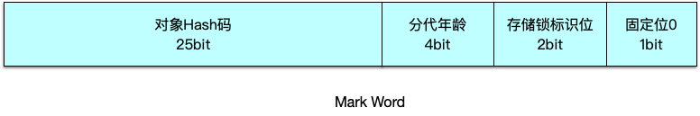
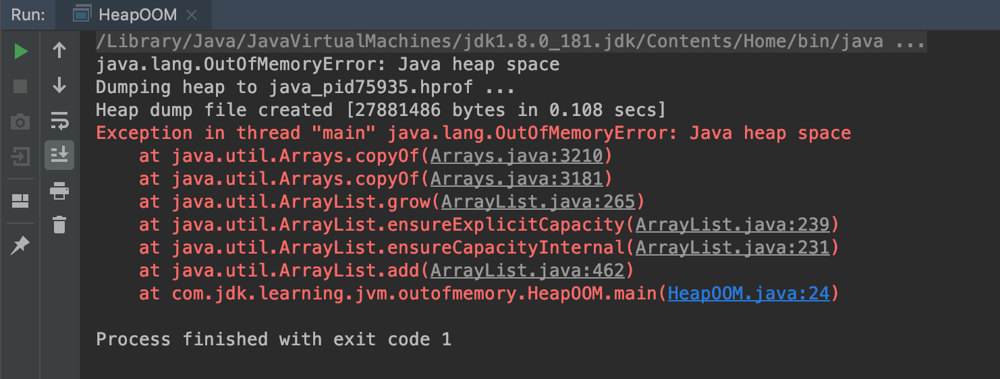
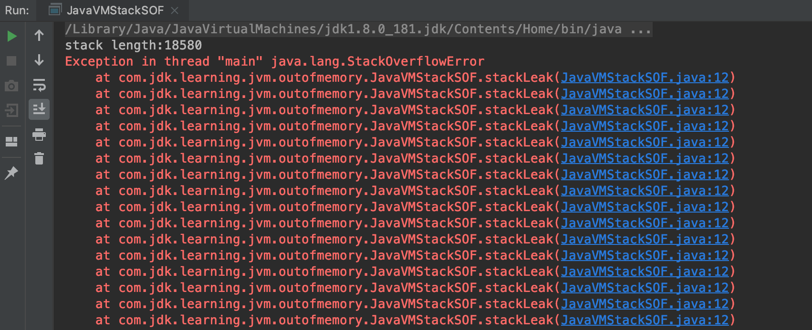
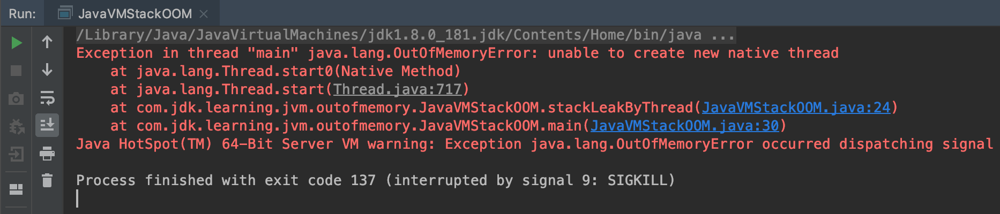
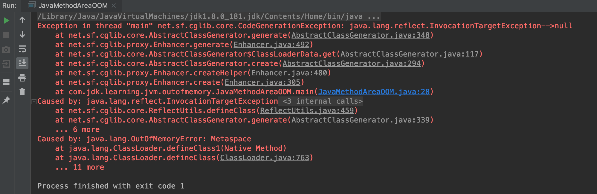

本文介绍JVM内存结构、类加载、GC、JVM调优等方面。《深入理解Java虚拟机: JVM高级特性与最佳实践》
JVM内存结构
JVM = 类加载器(classloader) + 执行引擎(execution engine) + 运行时数据区域(runtime data area)

运行时数据区域
Java虚拟机在执行Java程序的过程中会把它所管理的内存划分为若干个不同的数据区域。这些数据区域有各自的用途，以及创建和销毁的时间，有的区域随着虚拟机进程的启动而存在，有些区域则是依赖用户新城的启动和结束而建立和销毁。
Java堆
思考：为什么要使用分代模型？？？
被所有线程共享，在虚拟机启动时创建，用来存放对象实例，几乎所有的对象实例都在这里分配内存。
对于大多数应用来说，Java堆是Java虚拟机所管理的内存中最大的一块。
Java堆是垃圾收集器管理的主要区域，因此很多时候也被称为“GC堆”。如果从内存回收的角度看，由于现在收集器基本都是采用的分代收集算法，所以Java堆中还可以细分为：新生代和老年代；新生代又有Eden空间、From Survivor空间、To Survivor空间三部分。
Java堆不需要连续内存，并且可以动态增加其内存，增加失败会抛出OOM异常。

| 控制参数 | 作用 |
|---|---|
| -Xms | 设置堆的最小空间大小 |
| -Xmx | 设置堆的最大空间大小 |
| -XX:NewSize | 设置新生代最小空间大小 |
| -XX:MaxNewSize | 设置新生代最大空间大小 |
| -Xss | 设置每个线程的堆栈大小 |
年轻代
有将近98%的对象都是朝生夕死，所以针对这一情况，对象会在新生代Eden中进行分配，当Eden区没有足够空间的时候，虚拟机会触发Minor GC。Minor GC的回收速度很快，通过Minor GC后，Eden区会被清空。Eden区的绝大部分对象在这个时候都会被回收，剩下的那些无需被回收的对象会被放到Survior的from区，如果from区放不下就会直接被放到Old区。
等到再次触发Minor GC后会将Eden区和from区存活的对象放到to区。同样的，如果to区放不下就会被放到Old区。Minor GC会将年轻代的存活的对象在from区和to区来回存放。
在Survivor区中存活的对象，每经历一次Minor GC，对象的年龄就会加1，当长期存活的对象年龄达到一定数字 15 就会被移到老年代。
另外还有一个机制，虚拟机并不一定要对象年龄达到 15 岁时才会放入老年代，如果Survivor区中相同年龄对象的大小的和大于Suvivor空间的一半，年龄大于等于改年龄的对象就可以直接进入老年代，无需等待“成年”，类似于负载均衡。
老年代
老年代占据着，2/3的堆内存空间，只有在Major GC时才会被清理，每次Major GC都会出发”Stop The World”。内存越大，STW的时间就越长，所以内存也不是越大越好。
除了年轻代那里的对象会进入老年代以外，还有一种特殊情况：大对象。大对象是指大量连续内存空间的对象，这部分对象不管其生命周期有多短，都会直接进入老年代。这样做的目的是为了避免在Eden区和两个Survivor区发生大量的内存复制。
方法区
用于存放已被加载的类信息、常量、静态变量、即时编译器编译后的代码等数据。
和Java堆一样不需要连续的内存，并且可以动态扩展，动态扩展失败一样会抛出OOM异常。
对这块区域进行垃圾回收的主要目标是对常量池的回收和对类的卸载。
方法区逻辑上属于堆的一部分，为了与堆进行区分，通常又叫“非堆”。
运行时常量池
Class文件中除了有类的版本、字段、方法、接口等描述信息外，还有一项信息是常量池。运行时常量池是方法区的一部分。
Class文件中的常量池（编译器生成的各种字面量和符号引用）会在类加载后被放入这个区域。
除了在编译期生成的常量，还允许动态生成，例如String的intern（）。这部分常量也会被放入运行时常量池。
注：
在JDK1.7之前， HotSpot 使用永久代实现方法区；HotSpot 使用GC分代实现方法区带来了很大便利；
从JDK1.7开始 HotSpot 开始移除永久代。其中符号引用（Symbols）被移动到 Native Heap中，字符串常量和类引用被移动到 Java Heap 中。
在JDK1.8中，永久代已经被完全被元空间（Metaspace）取代。元空间的本质和永久代类似，都是对JVM规范中方法区的实现。不过元空间与永久代之间最大的区别在于：元空间并不在虚拟机中，而是使用本地内存。因此，默认情况下，元空间的大小仅受本地内存限制。
Java虚拟机栈
线程私有，它的生命周期与线程相同。
虚拟机栈描述的是Java方法执行的内存模型：每个方法被执行的时候都会同时创建一个栈桢用于存储局部变量表、操作栈、动态链接、方法出口等信息。每一个方法被调用直至执行完成的过程，就对应着一个栈帧在虚拟机栈中从入栈到出栈的过程。
局部变量表存放了编译器可知的各种基本数据类型（boolean、byte、char、short、int、float、double、long）、对象引用（reference），它不等同于对象本身，根据不同的虚拟机实现，它可能是一个指向对象起始地址的引用指针，也可能指向一个代表对象的句柄或者其他与此对象相关的位置和returnAddress的类型。局部变量表所需的内存空间在编译期间完成分配，当进入一个方法时，这个方法需要在帧中分配多大的局部变量空间是完全确定的，在方法运行期间不会改变局部变量表的大小。
- 局部变量表 - 存储方法参数，内部使用的变量
- 操作栈数 - 在变量进行存储时，需要进行入栈和出栈
- 动态链接 - 引用类型的指针
- 方法出口 - 方法的返回
一段源程序代码：
1 | public class Demo { |
生成字节码文件：
1 | javac demo.java |
对class文件反汇编：
1 | javap demo.class > demo.txt |
通过文件编译工具来查看demo.txt的内容：
1 | Compiled from "Demo.java" |
该区域可能抛出以下异常：
- 当线程请求的栈深度超过最大值，会抛出StackOverflowError异常
- 栈进行动态扩展时如果无法申请到足够内存，会抛出OutOfMemoryError异常
本地方法栈
与虚拟机栈非常类似，虚拟机栈为虚拟机执行Java方法（也就是字节码）服务，而本地方法栈则是为虚拟机使用到的Native方法服务。有的虚拟机（Sun Hotpot）直接把本地方法栈和虚拟机栈合二为一。
与虚拟机栈一样，本地方法栈区域也会抛出StackOverflowError和OutOfMemoryError异常。
程序计数器
线程私有，它的生命周期与线程相同。
可以看作是当前线程所执行的字节码的行号指示器。
在虚拟机的概念模型里，字节码解释器的工作时就是通过改变这个计数器的值来选取下一条需要执行的字节码指令，如：分支、循环、跳转、跳转、异常处理、线程恢复等基础功能。
如果线程正在执行的是一个Java方法，这个计数器记录的是正在执行的虚拟机字节码指令的地址；如果执行的是Native方法，这个计数器值则为空（undefined）。
程序计数器中存储的数据所占空间的大小不会随程序的执行而发生改变，所以此区域不会出现OOM的情况。
直接内存（Direct Memory）
直接内存并不是虚拟机运行时数据区的一部分，也不是Java虚拟机规范中定义的内存区域，但是这部分内存也被频繁的使用，而且也可能导致OOM异常。
在JDK1.4中新加入了NIO类，引入了一种基于 Channel 与 Buffer 的I/O方式，可以直接使用Native函数库分配堆外内存，然后通过一个存储在Java堆里的DirectByteBuffer对象作为这块内存的引用进行操作。这样能在一些场景中显著提高性能，因为避免了在Java堆和Native堆中来回复制数据。本机直接内存的分配不会受到Java堆大小的限制，但是，既然是内存，肯定还是会受到本机总内存（包括RAM以及SWAP区或者分页文件）大小以及处理器寻址空间的限制，也会抛出OOM异常。
HotSpot虚拟机对象
对象的创建
- 虚拟机遇到一条new指令时，首先将去检查这个指令的参数是否能在常量池中定位到一个类的符号引用，并且检查这个符号引用代表的类是否已被加载、解析和初始化过。
- 虚拟机将为新生对象分配内存：
Serial、ParNew带Compact过程 -> 绝对规整的内存 -> “指针碰撞” Bump the pointer
CMS Mark-Sweep -> 不规整的内存 -> “空闲列表” Free List
并发创建对象如何保证线程安全：
同步处理 -> CAS + 失败重试
线程划分 -> TLAB - 虚拟机要对对象进行必要的设置，例如这个对象是哪个类的实例、如何才能找到类的元数据信息、对象的哈希码、对象的GC分代年龄等信息。
对象的内存布局
在HotSpot虚拟机中，对象在内存中存储的布局可以分为3块区域：对象头（Header）、实例数据（InstanceData）和对齐填充（Padding）。

实例数据部分是对象真正存储的有效信息，也是在程序代码中所定义的各种类型的字段内容。
对齐填充并不是必然存在的，也没有特别的含义，它仅仅起着占位符的作用。由于HotSpotVM的自动内存管理系统要求对象起始地址必须是8字节的整数倍，换句话说，就是对象的大小必须是8字节的整数倍。而对象头部分正好是8字节的倍数（1倍或者2倍），因此，当对象实例数据部分没有对齐时，就需要通过对齐填充来补全。
对象的访问定位

使用句柄来访问的最大好处就是reference中存储的是稳定的句柄地址，在对象被移动（垃圾收集时移动对象是非常普遍的行为）时只会改变句柄中的实例数据指针，而reference本身不需要修改。

使用直接指针访问方式的最大好处就是速度更快，它节省了一次指针定位的时间开销，由于对象的访问在Java中非常频繁，因此这类开销积少成多后也是一项非常可观的执行成本。
OOM java示例
java堆溢出
1 | /** |
运行结果:

虚拟机栈和本地方法栈溢出
在单个线程下，无论是由于栈帧太大还是虚拟机栈容量太小，当内存无法分配的时候，虚拟机抛出的都是StackOverflowError异常。
1 | /** |
运行结果:

创建线程导致内存溢出异常，每个线程都会分配到一定的栈容量，每个线程分配到的栈容量越大，可以创建的线程数就越少，建立线程时就容易把剩下的内存耗尽
1 | /** |
运行结果:

方法区和运行时常量池溢出
借助CGLib直接操作字节码运行生成大量的动态类，撑爆方法区
1 | /** |
运行结果:

GC算法 垃圾收集器
对象存活判断
可达性分析：从GC Roots开始向下搜索，搜索所走过的路径称为引用链。当一个对象到GC Roots没有任何引用链相连时，则证明此对象是不可用的。不可达对象。
GC Roots包括：
- 虚拟机栈引用的对象
- 方法区中类静态属性实体引用的对象
- 方法区中常量引用的对象
- 本地方法栈中JNI引用的对象
垃圾回收算法

- 复制：将内存缩小为原来的一半，代价略高。YGC
- 标记-清除：标记和清除的两个过程效率都不高；产生大量不连续的内存碎片。OGC
- 标记整理：如果不想浪费50%的空间，又不想要内存碎片。OGC
分代收集算法
根据各个年代的特点采用最适当的收集算法。在新生代中，每次垃圾回收都发现只有少量对象死去，选用复制算法，只需要付出少量存活对象的肤质成本就可以完成收集。而老年代中因为对象存活率高，没有额外空间对它进行分配担保，就必须使用标记清除或标记整理来回收。

垃圾回收器分类标准
| 分类标准 | 描述 |
|---|---|
| 线程数 | 串行和并行，串行一次只使用一个线程进行垃圾回收，并行一次将开启多个线程同时进行垃圾回收。在并行能力较强的CPU上，使用并行垃圾回收器可以缩短GC的停顿时间 |
| 工作模式 | 并发式和独占式，并发式垃圾回收器与应用程序线程交替工作，以尽可能减少应用程序的停顿时间，独占式垃圾回收器(Stop the world)一旦运行，就停止应用程序的其他所有线程 |
| 碎片处理方式 | 压缩式和非压缩式，压缩式垃圾回收器在回收完成后，对存活对象进行压缩整理，消除回收后的碎片 |
| 工作的内存区间 | 新生代垃圾回收器和老年代垃圾回收器 |
Serial - 新生代串行收集器

使用单线程进行垃圾回收，独占式，使用-XX:+UseSerialGC指定使用，JVM在Client模式下默认垃圾收集器
复制算法
优点：实现简单，处理高效
缺点：Stop The World
[GC (Allocation Failure) [DefNew: 1937K->320K(3072K), 0.0021596 secs] 1937K->1645K(9920K), 0.0023185 secs] [Times: user=0.01 sys=0.00, real=0.00 secs]
ParNew - 新生代并行收集器

实现和Serial相同，仅将GC线程改成多线程，使用-XX:+UseParNewGC指定使用
复制算法
优点：在多CPU情况下优于Serial
缺点：Stop The World
GC线程数， -XX:+ParallelGCThreads
当CPU个数<8，ParallelGCThreads = CPU个数
当CPU个数>8，ParallelGCThreads = 3 + （（5*CPU个数/8））
[GC (Allocation Failure) [ParNew: 1937K->320K(3072K), 0.0023399 secs] 1937K->1656K(9920K), 0.0025229 secs] [Times: user=0.00 sys=0.00, real=0.00 secs]

Parallel Scavenge - 新生代并行收集器
缺点：Stop The World
线程模型和ParNew相同，区别在于Parallel Scavenge收集器的目标是达到一个可以控制的吞吐量
复制算法
1 | -XX:+UseParallelGC，指定使用 |
[GC (Allocation Failure) –[PSYoungGen: 1998K->1998K(2560K)] 8142K->
Serial Old（MSC） - 老年代串行收集器
缺点：Stop The World
使用标记-整理算法，和Serial一样是串行独占式回收器，可以和Serial、ParNew搭配使用。
缺点是停顿时间可能会比较长。
[Full GC (Allocation Failure) [Tenured: 33389K->33377K(34176K), 0.0128073 secs] 47726K->47714K(49536K), [Metaspace: 2501K->2501K(1056768K)], 0.0136535 secs] [Times: user =0.02 sys=0.00, real=0.01 secs]
Parallel Old - 老年代并行收集器
缺点：Stop The World
使用标记-整理算法，和Parallel Scavenge一样是并行多线程收集器，关注于吞吐量和CPU资源敏感的场合。
-XX:+UseParallelOldGC
缺点是停顿时间可能会比较长。
[Full GC (Ergonomics) [PSYoungGen: 1957K->1526K(2560K)] [ParOldGen: 6248K->6261K(7168K)] 8205K>7788K(9728K), [Metaspace: 2496K->2496K(1056768K)], 0.0072201 secs] [Times : user=0.01 sys=0.00, real=0.01 secs]

CMS - 老年代并发收集器

全称：Concurrent Mark Sweep
基于标记-清除算法
一种以获取最短停顿时间为目标的收集器。CMS并非没有暂停，而是用两次短暂停来替代串行标记整理算法的长暂停，它的收集周期如下：
- 初始标记
Stop The World
仅仅标记GC Roots内直接关联的对象。这个阶段速度很快。 - 并发标记
进行GC Tracing，从GC Roots开始对堆进行可达性分析，找出存活对象。 - 重新标记
修正并发期间由于用户进行运作导致的标记变动的那一部分对象的标记记录。这个阶段的停顿时间一般会比初始标记阶段稍长点，但远比并发标记的时间短。 - 并发清除
清除垃圾对象，标记-清除算法。 - 并发重置状态等待下一次CMS的触发
在整个过程中，CMS 回收器的内存回收基本上和用户线程并发执行。
缺点：
- 对CPU资源非常依赖。过分依赖于多线程环境，默认开启的线程数为
(CPU的数量*3)/4，当CPU的数量小于4时，CMS对用户查询的影响将会很大，因为他们要分出一半的运算能力去执行回收器线程。 - 无法清除浮动垃圾。CMS并发清除阶段清除已标记的垃圾，但用户线程还在运行，因此会有新的垃圾产生，但是这部分垃圾未被标记，在下一次GC才能清除，因此被称为浮动垃圾。
- 垃圾收集结束后残余大量空间碎片。因为采用的标记-清除算法。
G1 - 整堆回收器
JDK1.7中正式投入使用，用于取代 CMS 的压缩回收器。
G1 首先将 堆 分为 大小相等 的 Region，避免 全区域 的垃圾回收。然后追踪每个 Region 垃圾 堆积的价值大小，在后台维护一个 优先列表，根据允许的回收时间优先回收价值最大的 Region。同时 G1采用 Remembered Set 来存放 Region 之间的 对象引用 ，其他回收器中的 新生代 与 老年代 之间的对象引用，从而避免 全堆扫描。

- 初始标记
Stop The World
仅仅标记GC Roots内直接关联的对象。这个阶段速度很快。 - 并发标记
进行GC Tracing，从GC Roots开始对堆进行可达性分析，找出存活对象。 - 重新标记
修正并发期间由于用户进行运作导致的标记变动的那一部分对象的标记记录。这个阶段的停顿时间一般会比初始标记阶段稍长点，但远比并发标记的时间短。 - 筛选回收
首先对各个 Region 的回收价值和成本进行排序，根据用户所期望的 GC停顿时间来制定回收计划。这个阶段可以与用户程序并发执行，但是因为只回收一部分Region，时间是用户可控制的，而且停顿用户线程将大幅提高回收效率。
与其他 GC回收相比，G1具备以下4个特点：
并行与并发
使用多个 CPU 来缩短 Stop-the-World 的 停顿时间，部分其他回收器需要停顿 Java 线程执行的 GC 动作，G1 回收器仍然可以通过 并发的方式 让 Java 程序继续执行。分代回收
与其他回收器一样，分代概念 在 G1 中依然得以保留。虽然 G1 可以不需要 其他回收器配合 就能独立管理 整个GC堆，但它能够采用 不同的策略 去处理 新创建的对象 和 已经存活 一段时间、熬过多次 GC 的旧对象，以获取更好的回收效果。新生代 和 老年代 不再是 物理隔离，是多个 大小相等 的独立 Region。空间整合
与 CMS 的 标记—清理 算法不同，G1 从 整体 来看是基于 标记—整理 算法实现的回收器。从 局部（两个 Region 之间）上来看是基于 复制算法 实现的。
但无论如何，这 两种算法 都意味着 G1 运作期间 不会产生内存空间碎片，回收后能提供规整的可用内存。这种特性有利于程序长时间运行，分配大对象 时不会因为无法找到 连续内存空间 而提前触发 下一次 GC。可预测的停顿
这是 G1 相对于 CMS 的另一大优势，降低停顿时间 是 G1 和 CMS 共同的关注点。G1 除了追求 低停顿 外，还能建立 可预测 的 停顿时间模型，能让使用者明确指定在一个 长度 为 M 毫秒的 时间片段 内，消耗在 垃圾回收 上的时间不得超过 N 毫秒。（后台维护的 优先列表，优先回收 价值大 的 Region）。
类加载机制
什么是类的加载
类的加载是指将类的.class文件中的二进制数据读入到内存中，将其放在运行时数据区的方法区内，然后在堆区创建一个java.lang.Class对象，用来封装类在方法区内的数据结构。类的加载的最终产品是位于堆区中的Class对象，Class对象封装了类在方法区内的数据结构，并且向Java程序员提供了访问方法区内的数据结构的借口。
类加载器并不需要等到某个类被“首次主动使用”时再加载它，JVM规范允许类加载器在预料某个类将要被使用时就预先加载它，如果在预先加载的过程中遇到了.class文件缺失或存在错误，类加载器必须在程序首次主动使用该类时才报告错误（LinkageError），如果这个类一直没有被程序主动使用，那么类加载器就不会报告错误。
类的生命周期

加载
- 通过一个类的全限定名来获取此定义此类的二进制字节流
- 将这个字节流所代表的静态存储结构转换为方法区的运行时数据结构
- 在内存中生成一个代表此类的java.lang.Class对象，作为方法区这个类的各种数据结构的访问入口
加载.class文件的方式：
- 从本地系统中直接加载
- 通过网络下载.class文件
- 从zip,jar等归档文件中加载.class文件
- 从专有数据库中提取.class文件
- 从Java源文件动态编译为.class文件
验证
- 文件格式验证：验证字节流是否符合Class文件格式的规范，并且能被当前版本的虚拟机处理。
- 元数据验证：对字节码描述的信息进行语义分析，以保证其描述的信息符合Java语言规范的要求。是否有父类（除了java.lang.Object都应该有父类），
是否继承了被final修饰的类，是否实现了接口中的所有方法。 - 字节码验证：通过数据流和控制流分析，确定程序语义是合法的、符合逻辑的。
- 符号引用验证：符号引用中通过字符串描述的全限定名是否能找到对应的类；符号引用中通过字符串描述的全限定名是否能找到对应的类；符号引用中的类、字段、方法的访问性（private、protected、public、default）是否可被当前类访问。符号引用中的类、字段、方法的访问性（private、protected、public、default）是否可被当前类访问。
准备
进行内存分配，仅包括类变量（被static修饰的变量），而不包括实例变量。
1 | public static int value=123； |
变量value在准备阶段过后的初始值为0而不是123，因为这时候尚未开始执行任何Java方法，而把value赋值为123的putstatic指令是程序被编译后，存放于类构造器＜clinit＞()方法之中，所以把value赋值为123的动作将在初始化阶段才会执行。
1 | public static final int value=123； |
编译时Javac将会为value生成ConstantValue属性，在准备阶段虚拟机就会根据ConstantValue的设置将value赋值为123。
解析
解析阶段是虚拟机将常量池内的符号引用替换为直接引用的过程，符号引用在前一章讲解Class文件格式的时候已经出现过多次，在Class文件中它以CONSTANT_Class_info、CONSTANT_Fieldref_info、CONSTANT_Methodref_info等类型的常量出现。
- 类或接口解析
- 字段解析
- 类方法解析
- 接口方法解析
初始化
到了初始化阶段，才真正执行类中定义的Java代码。初始化阶段是执行类构造器＜clinit＞()方法的过程。
类加载器

站在Java虚拟机的角度，只存在两种不同的类加载器: 启动类加载器，是虚拟机自身的一部分；所有其它的类加载器，独立于虚拟机之外，并且全部继承自java.lang.ClassLoader，这些类加载器需要由启动类加载器加载到内存中之后才能去加载器他的类。
- 启动类加载器
负责加载存放在JDK\jre\lib下，或被 -Xbootclasspath参数指定的路径中的，并且能够被虚拟机识别的类库（如rt.jar，所有java.开头的类均被Bootstrap ClassLoader加载）。启动类加载器是无法被Java程序直接引用的。
- 扩展类加载器
该加载器由sun.misc.Launcher$ExtClassLoader实现，它负责加载JDK\jre\lib\ext目录中，或者由java.ext.dirs系统变量指定的路径中的所有类库（如javax.开头的类），开发者可以直接使用扩展类加载器。
- 应用程序类加载器
该加载器由sun.misc.Launcher$AppClassLoader实现，它负责加载用户类路径（Classpath）所指定的类，开发者可以直接使用该类加载器，如果应用程序中没有自定义过自己的类加载器，一般情况下这个就是程序中默认的类加载器。
类加载的几种方式：
- 命令行启动应用时由JVM初始化加载
- Class.forName()方式动态加载，将类.class文件加载到jvm中之外，还会对类进行解释，执行类中的static块
- ClassLoader.loadClass()方法动态加载，就是将.class文件中加载到jvm中，不会执行static中的内容，只有在newInstance才会去执行static块
- Class.forName(name,intialize,loader)，带参函数也可以控制是否加载static块，并且只有调用了newInstance()方法才调用构造函数，创建类的对象
双亲委派模型
如果一个类加载器收到了类加载的请求，它首先不会自己去尝试加载这个类，而是把请求委托给父类加载器去完成，依次向上，因此，所有类加载请求最终都应该被传递到顶层的启动类加载器中，只有当父加载器在它的搜索范围中没有找到所需的类时，即无法完成该加载，子加载器才会尝试自己去加载该类。
当 AppClassLoader 加载一个class时，它首先不会自己去尝试加载这个类，而是被类加载请求委派给父类加载器 ExtClassLoader 去完成。
当 ExtClassLoader 加载一个class时，它首先不会自己去尝试加载这个类，而是被类加载请求委派给父类加载器 BootstrapClassLoader 去完成。
如果 BootstrapClassLoader 加载失败，会使用 ExtClassLoader 来尝试加载
如果 ExtClassLoader 也加载失败，则会使用 AppClassLoader 来加载，如果 AppClassLoader 也加载失败，则会报出异常 ClassNotFoundException
双亲委派模型的意义：
系统类防止内存中出现多份同样的字节码
保证Java程序安全稳定运行
JVM调优
命令
jstat：虚拟机统计信息监视工具
1 | jstat -gcutil pid [interval] [count] |
jinfo: Java配置信息工具
1 | jinfo -heap pid |
jmap：Java内存映像工具
1 | jmap -histo:live pid |
jhat: 虚拟机堆转储快照工具
1 | jhat dump.hprof |
屏幕显示”Serverisready.”的提示后，用户在浏览器中键入http://localhost:7000/就可以看到分析结果。
jstack: Java堆栈跟踪工具
1 | jstack -l pid |
工具
JConsole
VisualVM
MAT
GC参数调优
排除Cache内容过多的问题，如果Cache内容过多会导致JVM老年代容易被用满导致频繁GC，使用jstat命令查看GC情况
调整GC时间点
如果GC需要处理的内存量比较大，执行的时间也就比较长，STW时间也就更长。按照这个思路调整CMS启动的时间点，希望提早GC，也就是让GC变得更加频繁但是期望每次执行的时间较少。-XX:+UseCMSInitiatingOccupancyOnly
-XX:+CMSInitiatingOccupancyFraction=50在Old区使用了50%的时候触发GC，实验后发现GC的频率有所增加。
调整对象在年轻代中驻留的时间，尝试提升这些对象在年轻代GC时被销毁的概率，-XX:MaxTenuringThreshold=31
Full GC之前先再进行一次YGC
-XX:+ScavengeBeforeFullGC
-XX:+CMSScavengeBeforeRemarkYoung区对象引用了Old区的对象，如果Old区进行清理之前不进行Young区清理就会导致Old区被Young区引用的对象无法释放